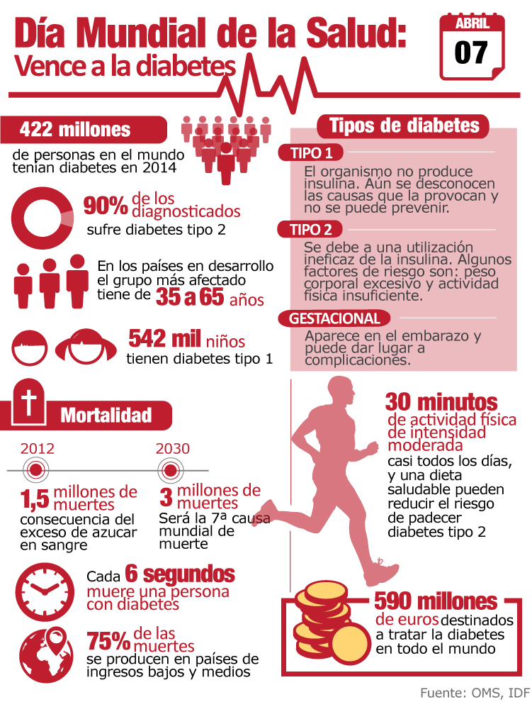

Dia Mundial de la Salud
Infografia
Infografia del dia de la salud

Infografia del dia de la salud
DÍA MUNDIAL DE LA SALUD. Cada año, el 7 de abril se celebra el Día Mundial de la Salud para conmemorar el aniversario de la fundación de la Organización Mundial de la Salud (OMS) en 1948.
El tema de la iniciativa es que los líderes mundiales contrajeron como compromiso social cuando se acordaron los Objetivos de Desarrollo Sostenible (ODS); se trata de la consecución y mantenimiento de la Cobertura Sanitaria Universal (CSU); la cual establece que todas las personas y comunidades reciban los servicios de salud que precisan sin sufrir por ello dificultades económicas. Los países que se han comprometido en la CSU realizan una importante inversión en su capital humano. En los últimos decenios, la CSU ha surgido como una estrategia clave para avanzar hacia otros objetivos relacionados con la salud y de desarrollo más amplios. Algunos países ya han logrado importantes avances hacia la Cobertura Sanitaria Universal. Aun así, la mitad de la población mundial todavía no puede acceder a los servicios de salud que precisa. Si los países quieren alcanzar la meta de los ODS, mil millones más de personas deberán beneficiarse de la CSU de aquí a 2023.

La OMS presta especial atención a la lucha contra los problemas sanitarios más importantes, sobre todo en los países en desarrollo y en contextos de crisis. Desde la Organización sus expertos elaboran directrices y normas sanitarias, ayudan a los países a abordar cuestiones de salud pública y se fomenta la investigación sanitaria. Por mediación de la OMS, los gobiernos pueden afrontar conjuntamente los problemas sanitarios mundiales y mejorar el bienestar de las personas.
La cobertura sanitaria universal (CSU) implica que todas las personas y comunidades reciban los servicios de salud que necesitan sin tener que pasar penurias financieras para pagarlos. Abarca toda la gama de servicios de salud esenciales de calidad, desde la promoción de la salud hasta la prevención, el tratamiento, la rehabilitación y los cuidados paliativos. La CSU permite a todos acceder a servicios que atienden las causas más importantes de las enfermedades y la muerte, y asegura que la calidad de esos servicios sea suficientemente buena para mejorar la salud de las personas que los reciben.


 1
1 3
3 4
4